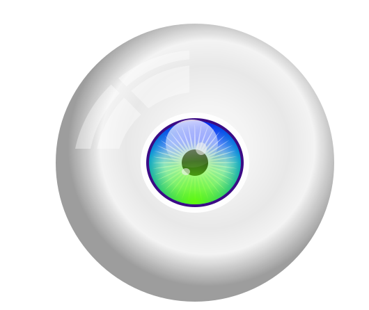

Discord is a VolP and instant messaging social platform.
Users have the ability to communicate with voice calls, video calls,text messaging,media and files in private chats or as part of communities called "servers"
Anime
My faviorate anime is naruto.
naruto is the son of fourth hokage.
fourth hokage's name is minato.
hokage is the leader of hidden leaf village.
minato sacrifies him and his wifes life to save his village.
one day ninetale fox appeard and tring to destroy the hidden leaf village.
that day minato minato sealed ninetale fox's spirit in his new born baby named naruto.
other hokage of that village coverd the identity of naruto so that he can keep naruto safe fron other ninja.

The rise in 'real-world' research and 'learning by doing' education has generated exciting opportunities with the
potential to shift higher education culture at Institute of Computer Technology (ICT) under the Faculty of
Engineering & Technology, Ganpat University. ICT's provision for world class teaching and research is bolstered by
an active engagement of industry experts. The industry-Institute-Integration has resulted in 'industry
collaborated/sponsored courses' and setting up a number of sponsored labs.
Latest technologies are being adopted as an integral part of the world; determining greater employability of young
engineers. As a continued effort to offer the Programs-of-Future, Ganpat University provides an exclusive
opportunity to the engineering aspirants to join Bachelor of Technology (B.Tech.) - CSE (Computer Science and
Engineering) in association with IBM.
The rise in 'real-world' research and 'learning by doing' education has generated exciting opportunities with the
potential to shift higher education culture at Institute of Computer Technology (ICT) under the Faculty of
Engineering & Technology, Ganpat University. ICT's provision for world class teaching and research is bolstered by
an active engagement of industry experts. The industry-Institute-Integration has resulted in 'industry
collaborated/sponsored courses' and setting up a number of sponsored labs.
Latest technologies are being adopted as an integral part of the world; determining greater employability of young
engineers. As a continued effort to offer the Programs-of-Future, Ganpat University provides an exclusive
opportunity to the engineering aspirants to join Bachelor of Technology (B.Tech.) - CSE (Computer Science and
Engineering) in association with IBM.
Ganpat University- U. V. Patel College of Engineering (GUNI-UVPCE) is situated in Ganpat Vidyanagar campus. It was
established in 1997 and It is one of the constituent colleges of Ganpat University with a view of educating and training young
talented students. The Institute, at present, offers various undergraduate, postgraduate and Ph.D. programmes.
Ganpat University and the township of Ganpat Vidyanagar, a high-tech education campus is a joint initiative, purely
philanthropic in nature, by a large number of industrialists and technocrats, noble farmers and affluent businessmen for the
mission of “Social Upliftment through Education”. The University is established by the State Government by enactment of Act
No.19/2005 on 12th April, 2005. In consideration of its contribution to the Education in a short period of time, the University has
been given Permanent Membership of Association of Indian Universities (AIU), New Delhi besides having a membership from
Association of Commonwealth Universities (ACU), UK and International Association of Universities (IAU), France.